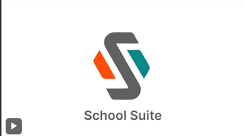
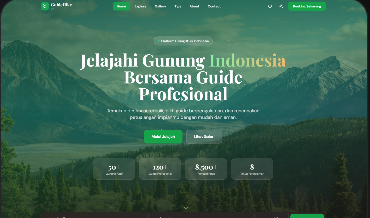

Proyek Terbaru

COFFEE-TECH (Smart Solar Dryer)
Peran: IoT Developer & DesignerDesain 3D dan purwarupa kubah pengering pintar dengan panel surya. Dirancang untuk optimalisasi dan efisiensi pengeringan komoditas pertanian berbasis IoT.

SchoolSuite
Peran: DevOpsSistem presensi terintegrasi berbasis biometrik (sidik jari dan scan wajah). Fokus pada deployment dan infrastruktur cloud yang efisien.

Guide Hike
Peran: UI/UX DesignerWebsite rekomendasi gunung dan pemandu pendakian. Berfokus pada pengalaman pengguna yang intuitif dan visual yang menarik.